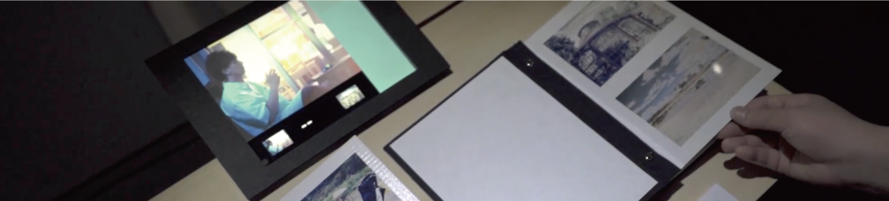
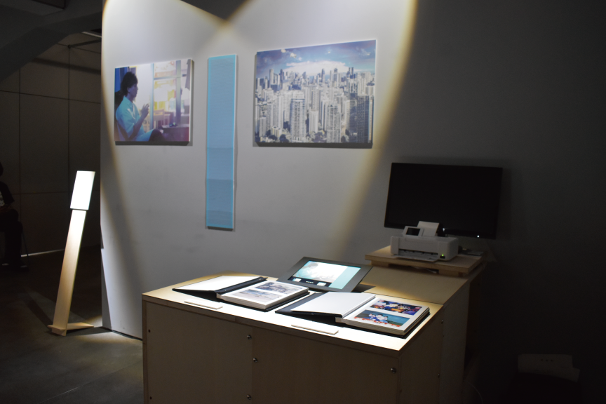
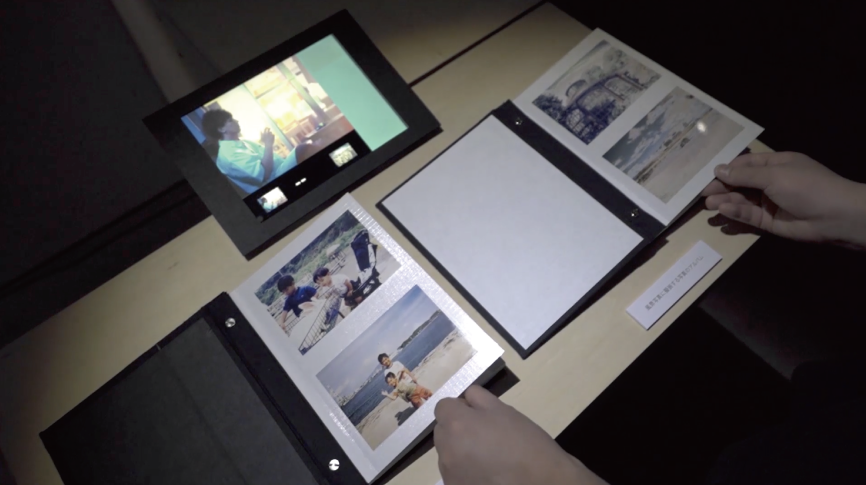
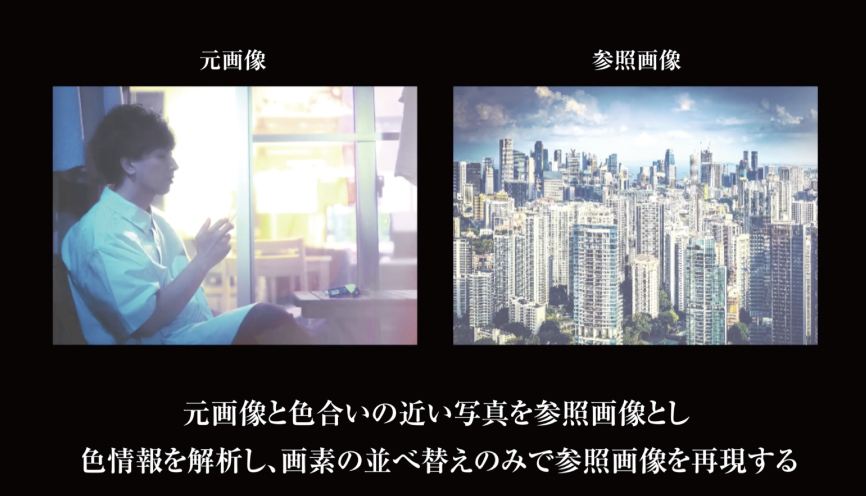
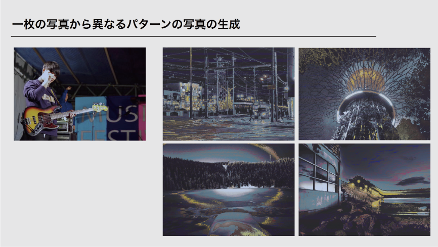
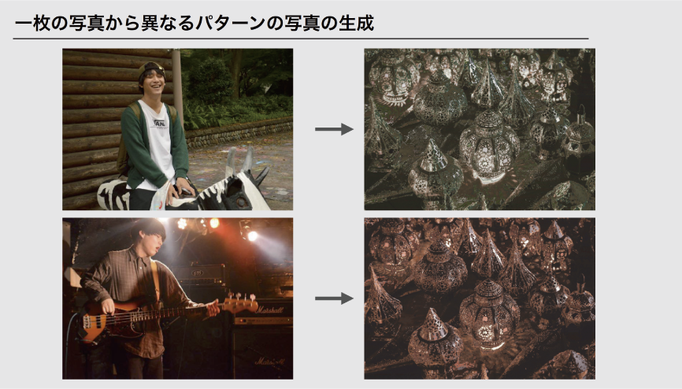

'19
擬態するポートレート
これまで、私たちのプライバシーの関心は、「自分の日常の中の秘密」から「データベースのセキュリティ」を内包するものへと変化を遂げてきた。一方、近年のスマートフォンの顔認証システムに見られるように情報端末では、個人の情報が端末の中で秘匿され、その端末が利用者に対し認証を行う事象が見られる。この事象を、端末が人々に対しプライバシーを感じ、中の情報を秘匿する動きとして捉えると、プライバシーを感じる主体は、人々からモノへと移行し始めていると考えることができるのではないだろうか。
この作品は、プライベートな写真と、その画素を並び替え関連のない風景の写真に可逆的に変換した「擬態するポートレート」を対にして並べたものである。 生成された風景写真は、鍵となる暗号コードを持っていれば元の写真に戻すことができ、逆に、鍵を所有していなければ、一見ただの風景写真にしか見えないため、変換後の写真がどこかに流出しても、写真が自律的に中のプライベートな情報を他人から守る。
「擬態するポートレート」は、風景写真に擬態することで人間から自身のプライバシーを自律的に守り、複合化コードを持つ者にのみ、本来の姿を見せる。 モノが人々に対しプライバシーを感じ、中の情報を秘匿するという現象がさらに進んだ未来において、プライベートな情報を持ちうる物質であるフィルム写真のあり方はどう変化していくだろうか。
    東京大学制作展2019Extra 展示 / ADADAJAPAN2019 学生研究奨励賞
MediaArt
2ヶ月
チーム作業:コンセプト/制作/デザイン
Python/Processing/Photoshop/Illustrator